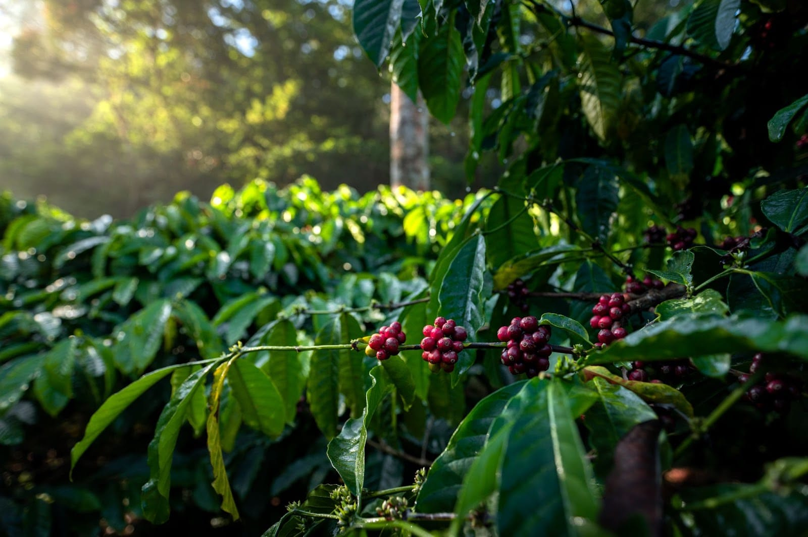

Chikkamagaluru is known for coffee cultivation, green hills and scenic drives in Karnataka's Western Ghats. It appeals to couples, families, nature lovers and travellers looking for a break from city routines. Because attractions can be spread across the region, it helps to plan the route around your accommodation and interests.
1. Discover Coffee Country
The region is associated with coffee plantations and a long farming tradition. Some properties offer guided experiences, but access varies. Contact the estate or accommodation provider to confirm whether visitors are permitted and whether advance arrangements are needed.
2. Explore Hills and Viewpoints
Hill viewpoints can provide expansive views when visibility is clear. Mist and rain can change conditions quickly, and access rules may vary by location. Check current local advice and avoid unsafe slopes, closed roads or restricted areas.

Image: Chikkamagaluru coffee hillsassets/blogs/chikkamagaluru-coffee-hills.jpg